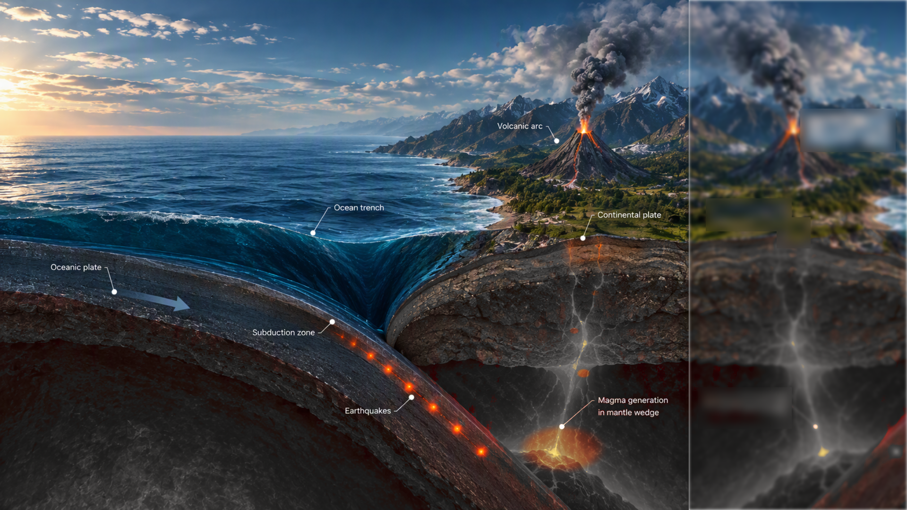

Simplified model. Motion is accelerated. Scale and geometry are not exact.
Earthquake depth
Shallow
Deep
Tools
Exit
1×
{{ t.label }}
{{ s.title }}
{{ r.name }}
Geology
{{ d.name }}
Tools
{{ a.label }}
History
{{ a.label }}
Color
Width
{{ w.label }}
{{ v.name }}
Focus
{{ f.name }}
Teach
Guided sequence
Reset
Collapse
3 of 7
Earthquakes
Notice how earthquake depth changes beneath the continent.
Ask students
What pattern do you notice?
Previous
Next
Exit teaching
Collapse